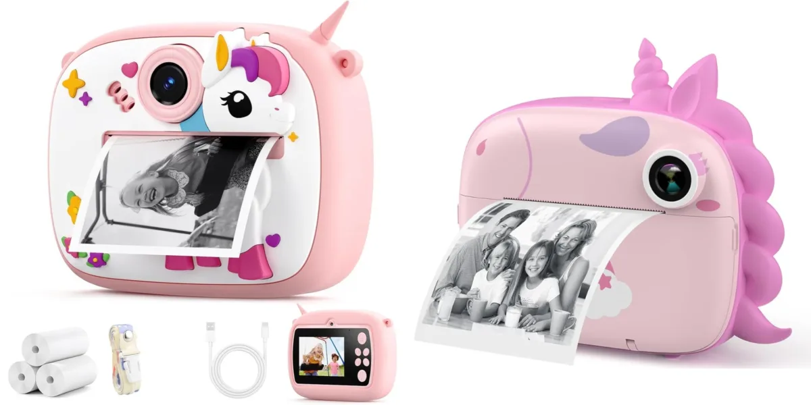

تکنولوژیای که واقعاً به کار میآید
گجتها و ابزارهای دیجیتال را سادهتر مقایسه کن
دیدن راهنماهابررسی محصولات منتخب تکنولوژی
مدلهای منتخب را قبل از رفتن به فروشگاه دقیقتر بررسی کن.

Duronaut 2g یا 6g؟
دو حجم یک مدل را بر اساس میزان مصرف و قیمت روز مقایسه کن.

دوربین چاپ سریع Unicorn یا EN71؟
کاغذ، باتری، کیفیت عکس و اقلام همراه را بین دو آگهی مقایسه کن.

R50i یا R50i NC یا QCY T13 ANC2؟
برای تماس، رفتوآمد و ANC سه گزینه را کنار هم ببین.

Samsung Galaxy A37 256/8
بررسی نسخه ۲۵۶ گیگابایت و رم ۸ گیگابایت Samsung Galaxy A37؛ نکات مهم خرید و تفاوت نسخه همراه شارژر.

Samsung Galaxy A07 64/4
بررسی Samsung Galaxy A07 نسخه ۶۴ گیگابایت و رم ۴ گیگابایت؛ برای چه کاربری مناسب است و باندل شارژر چه زمانی ارزش دارد.

Samsung Galaxy A17 4G 128/4
بررسی Galaxy A17 4G نسخه ۱۲۸ گیگابایت و رم ۴ گیگابایت؛ نکات خرید و مقایسه نسخه عادی با باندل شارژر.

Anker R50i NC
بررسی Anker R50i NC با ANC و شارژ USB-C؛ مناسب رفتوآمد، تماس و استفاده روزمره یا نه؟

QCY T13 ANC2
بررسی QCY T13 ANC2 با ANC، ENC، Transparency و اتصال چنددستگاهی؛ نکات مهم قبل از خرید.

Xiaomi Redmi Power Bank 20000 18W
بررسی پاوربانک شیائومی Redmi ظرفیت ۲۰۰۰۰ میلیآمپرساعت و توان ۱۸ وات؛ ظرفیت واقعی، وزن و سناریوی مناسب.

Anker Soundcore R50i A3949
بررسی Anker Soundcore R50i A3949 بدون حذف نویز فعال؛ مناسب تماس و استفاده روزمره یا بهتر است سراغ نسخه NC برویم؟

کاور کیس QCY T13 ANC2
مقایسه دو لینک کاور سیلیکونی برای کیس QCY T13 ANC2؛ سازگاری، فیت و نکات خرید اکسسوری.

Galaxy A07 یا A17 یا A37؟
سه نسخه 64/4، 128/4 و 256/8 را بر اساس نیاز واقعی مقایسه کن.
اول اکوسیستم و سناریوی استفاده، بعد فهرست امکانات
در خرید گجتها، امکانات بیشتر همیشه به معنی انتخاب بهتر نیست. ساعت هوشمند، هدفون یا پاوربانک زمانی ارزش خرید دارند که با گوشی، عادت روزانه و نیاز واقعی تو هماهنگ باشند. سازگاری نرمافزاری، عمر باتری، وزن، دوام و کیفیت استفاده روزمره معمولاً از چند قابلیت کماستفاده مهمترند.
سنجو مشخصات را به زبان کاربرد ترجمه میکند؛ یعنی بهجای اینکه فقط عدد ظرفیت، توان یا تعداد سنسورها را ببینی، متوجه شوی این تفاوت در استفاده واقعۆ چه اثری دارد و آیا ارزش هزینه اضافه را دارد یا نه.
مسیر سریع انتخاب
- برای اعلان، ورزش و پایش روزانه: راهنمای ساعت هوشمند.
- برای موسیقی، تماس و رفتوآمد: راهنمای هدفون و ایربادز.
- برای شارژ خارج از خانه: راهنمای پاوربانک.
قبل از خرید، سه قابلیت ضروری و سه قابلیت «خوب است باشد» بنویس. این کار جلوی پرداخت هزینه برای ویژگیهایی را میگیرد که در عمل استفاده نمیکنی.

مودم و روتر وایفای
اسپیکر بلوتوث